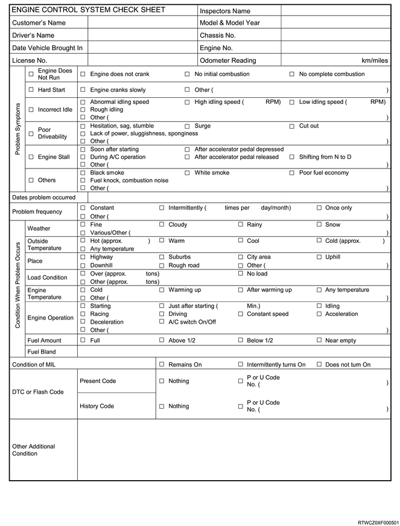
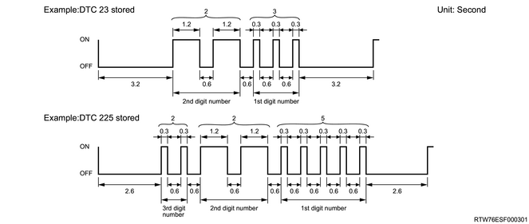

Begin the system diagnosis with Diagnostic System Check - Engine Controls. The Diagnostic System Check - Engine Controls will provide the following information.
The identification of the control modules which command the system.
The ability of the control modules to communicate through the serial data circuit.
Identification of stored DTCs and their statuses.
The use of the Diagnostic System Check - Engine Controls will identify the correct procedure for diagnosing the system and where the procedure is located.
Engine Control System Check Sheet must be used to verify the customer complaint. You need to know the correct operating behavior of the system and verify that the customer complaint is a valid failure of the system.

Reading flash DTCs
The system for communicating with the ECM is the DLC. The DTCs stored in the ECM memory can be read either by connecting a hand-held diagnostic scanner such as a scan tool with the DLC or by counting the number of flashes of the MIL light when the diagnostic test terminal of the DLC is grounded.
The DLC terminal 12 is pulled ground by shorting to DLC terminal 4 which is a ground wire. Once terminals 12 and 4 have been connected, turn the ignition switch ON, without starting the engine. If the MIL blinks DTC three times, it indicates that there is a current DTC or DTC in the failure history. If 2 or more DTCs have been stored in the ECM's memory, the DTCs will be output numerical order with each DTC being displayed three times. The blinking DTC display will continue as long as the DLC is shorted.

DTC type definition
There are 4 DTC types: Type A, B, C, and D. Among these DTCs, type A and B DTCs are related to emission whereas type C and D DTCs are related to items other than emission.
Action Taken When the DTC Sets, Type A
The ECM illuminates the MIL when the diagnostic runs and fails.
The ECM records the operating conditions at the time the diagnostic fails. The ECM stores this information in the Freeze Frame/Failure Records.
Actions taken when the DTC sets, Type B
When the diagnostic runs and detects an abnormality, the ECM illuminates the MIL on the second consecutive driving cycle.
The ECM records the operating conditions at the time the diagnostic fails. The first time the diagnostic fails, the ECM stores this information in the Failure Records. If the diagnostic reports a failure on the second consecutive driving cycle, the ECM records the operating conditions at the time of failure and stores this information in the Freeze Frame, and updates the Failure Records.
Conditions for clearing the MIL/DTC
The ECM turns OFF the MIL after 3 consecutive driving cycles that the diagnostic runs and does not fail.
A current DTC clears after one driving cycle that the diagnostic runs and passes.
A history DTC clears after 40 consecutive warm-up cycles if no failures are reported.
Clear the MIL and the DTC with a scan tool.
Actions taken when the DTC sets, Type C
When the diagnostic runs and fails, the ECM illuminates the SVS lamp.
The ECM records the operating conditions at the time the diagnostic fails.
The ECM stores this information in the Failure Records.
Conditions for clearing the SVS lamp and the DTC, Type C
The ECM turns OFF the SVS lamp after one driving cycle that the diagnostic runs and does not fail.
A current DTC clears after one driving cycle that the diagnostic runs and passes.
A history DTC clears after 40 consecutive warm-up cycles if no failures are reported.
Clear the SVS lamp and the DTC with a scan tool.
Actions taken when the DTC sets, Type D
The ECM will not illuminate the MIL or SVS lamp.
The ECM records the operating conditions at the time the diagnostic fails. The ECM stores this information in the Failure Records.
Condition for clearing the DTC, Type D
A current DTC clears after one driving cycle that the diagnostic runs and passes.
A history DTC clears after 40 consecutive warm-up cycles if no failures are reported.
Clear the DTC with a scan tool.